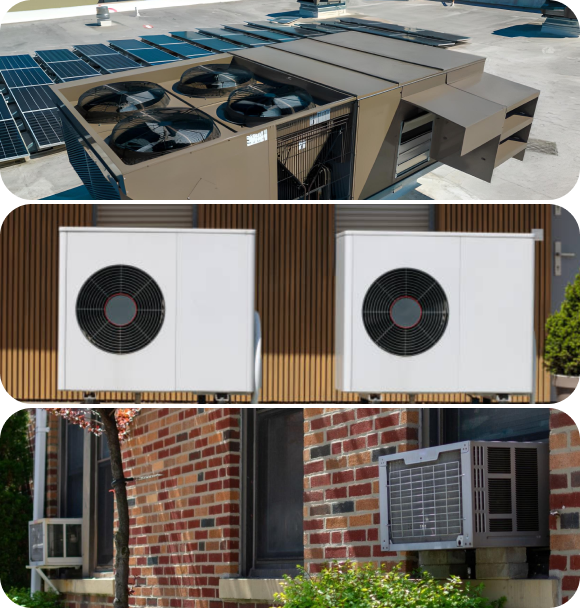

Choosing the Right Air Conditioner for Your Office Space
Selecting the appropriate air conditioning system for your office environment is essential to ensure optimal comfort, productivity, and energy efficiency. With various options available on the market, it's crucial to consider factors such as the size of your office space, layout, occupancy, and budget. In this article, we'll discuss how to choose the right air conditioner for your office space to meet your cooling needs effectively.
-
Assess Your Cooling Needs
Begin by assessing the cooling requirements of your office space, considering factors such as square footage, ceiling height, insulation, and the number of occupants. An accurate assessment will help determine the cooling capacity (measured in British Thermal Units or BTUs) needed to maintain a comfortable indoor temperature
-
Choose the Right Type of
Air ConditionerSelect the type of air conditioner that best suits your office space and cooling requirements. Options include central air conditioning systems, ductless mini-split systems, window units, and portable air conditioners. Consider factors such as installation flexibility, space constraints, and zoning capabilities when making your decision
 -
Evaluate Installation and
Maintenance RequirementsFactor in installation and maintenance requirements when choosing an air conditioning system for your office. Consider whether your office space allows for ductwork installation, or if a ductless mini-split system would be more suitable. Additionally, prioritize systems with easy access for routine maintenance and servicing to ensure optimal performance and longevity
-
Prioritize Indoor
Air QualitySelect air conditioning systems equipped with advanced filtration and purification features to maintain high indoor air quality in your office environment. Look for units with HEPA filters, UV-C light technology, or electrostatic filters that capture and eliminate airborne contaminants, allergens, and pollutants
Choosing the right air conditioner for your office space is crucial for maintaining a comfortable and
productive work environment. By assessing your cooling needs, prioritizing energy efficiency, considering
installation and maintenance requirements, and prioritizing indoor air quality, you can select a system that
meets your office's specific
requirements effectively.